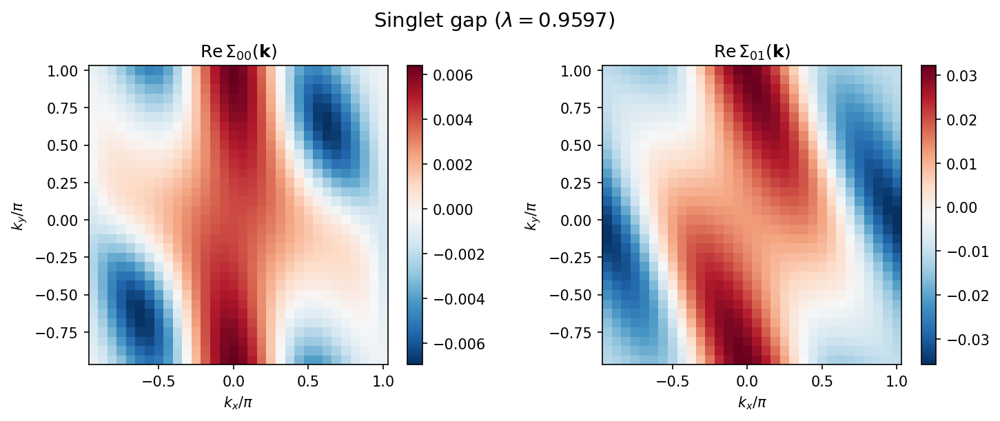

5.2. チュートリアル: Eliashberg方程式ソルバー¶
本チュートリアルでは、H-waveに含まれる線形化Eliashberg方程式ソルバー
hwave_sc の使い方を説明します。
このツールは、RPAソルバーで計算した裸感受率 \(\chi_0(\mathbf{q})\)
を用いて線形化Eliashberg方程式を解き、超伝導不安定性を解析します。
サンプルファイルは docs/ja/source/rpa/sample_sc ディレクトリにあります。
5.2.1. 計算の流れ¶
計算は2つのステップで行います:
RPA計算 (
hwave): 裸感受率 \(\chi_0(\mathbf{q})\) を計算し、chi0q.npzに保存します。Eliashberg方程式ソルバー (
hwave_sc):chi0q.npzを読み込み、 グリーン関数を再構成し、RPA頂点を計算した後、 線形化Eliashberg方程式を解きます。
5.2.2. モデル¶
本チュートリアルでは、二次元正方格子上の 2軌道タイトバインディングモデル を3/4フィリングで扱います。ハミルトニアンは以下の通りです:
ここで、オンサイトクーロン斥力 \(U = 0.4\)、 軌道間クーロン相互作用 \(V\) を使用します。
このサンプルは有機導体 \(\beta\)-(meso-DMBEDT-TTF)\(_2\)PF\(_6\) の伝導層モデルに基づいており、 トランスファー積分は拡張ヒュッケル法による計算値を使用しています。 [1]
5.2.3. 理論¶
超伝導感受率¶
RPA電荷感受率 \(\hat{X}^c\) およびスピン感受率 \(\hat{X}^s\) は 以下のように与えられます:
ここで \(\hat{X}^{(0)}\) は裸感受率、 \(\hat{U}\) はオンサイト相互作用行列、 \(\hat{V}\) はサイト間相互作用行列です。
線形化Eliashberg方程式¶
一重項超伝導の線形化Eliashberg方程式は次のように書けます:
ペアリング相互作用は、一重項の場合:
三重項の場合:
\(\lambda_S = 1\) (\(\lambda_T = 1\)) が超伝導転移点に対応します。 \(\lambda > 1\) （正の固有値）のとき常伝導状態は超伝導に対して不安定です。 負の固有値は符号反転ギャップに対応しますが、 自己無撞着条件 \(\Delta = K\Delta\) を満たさないため 超伝導不安定性を示しません。
Eliashberg方程式の数値解法として、hwave_sc では自己無撞着べき乗反復法
（固有値が最大のモードに収束）とArnoldi法による固有値解析を実装しています。
5.2.4. 入力ファイルの準備¶
パラメータファイル¶
TOML形式のパラメータファイル input.toml を作成します:
[log]
print_level = 1
[mode]
mode = "RPA"
[mode.param]
T = 0.1
CellShape = [32, 32, 1]
SubShape = [1, 1, 1]
Nmat = 512
filling = 0.75
[file]
[file.input]
path_to_input = "."
[file.input.interaction]
path_to_input = "."
Geometry = "geom.dat"
Transfer = "transfer.dat"
CoulombIntra = "coulombintra.dat"
CoulombInter = "coulombinter.dat"
[file.output]
path_to_output = "output"
chi0q = "chi0q"
chiq = "chiq"
[eliashberg]
solver_mode = "both"
chi0q_mode = "load"
pairing_type = "singlet"
init_gap = "cos"
max_iter = 500
alpha = 0.5
convergence_tol = 1.0e-5
num_eigenvalues = 10
eigenvalue_method = "arnoldi"
output_gap = "gap.dat"
output_eigenvalue = "eigenvalue.dat"
このファイルは以下のセクションから構成されます。
[mode.param] セクション¶
T: 温度。CellShape: k点メッシュのサイズ（2次元系では 32 x 32 x 1）。Nmat: 松原振動数の数（512）。filling: 1軌道1スピンあたりの電子充填率（0.75 = 3/4フィリング）。
[file] セクション¶
[file.input.interaction]: 幾何情報、トランスファー積分、 相互作用パラメータのファイルを指定します。RPAステップと共通です。[file.output]: \(\chi_0(\mathbf{q})\) および \(\chi(\mathbf{q})\) の出力先ディレクトリとファイル名。
[eliashberg] セクション¶
Eliashberg方程式ソルバーの設定です。主なパラメータ:
solver_mode:"iteration"(自己無撞着べき乗法)、"eigenvalue"(Arnoldi固有値解析)、または"both"。chi0q_mode:"load"はRPA出力ファイルから \(\chi_0(\mathbf{q})\) を読み込みます。"calc"は内部で計算します。"flex"はFLEX計算の dressed 感受率を読み込みます （frequency = "dynamic"に必須）。frequency: ペアリング頂点の振動数の扱い。"static"（デフォルト）は ボゾン振動数ゼロでペアリング頂点を評価する静的近似（Nakano--Kuroki 式(9)）で、 振動数依存性のないギャップを与えます。"dynamic"は、振動数依存のペアリング 頂点 \(V(\mathbf{q}, i\omega_l)\) とギャップ \(\phi(\mathbf{k}, i\omega_n)\) を用いた、松原振動数に完全に依存する Eliashberg 方程式を解きます。chi0q_mode = "flex"が必要です （下記の 動的振動数の節 を参照）。pairing_type:"singlet"または"triplet"。init_gap: 反復法の初期ギャップ対称性。"cos"(\(\cos(k_x+k_y+k_z)\))、"d_x2y2"(\(\cos k_x - \cos k_y\))、"random"などが利用可能です。 有効な形状因子の一覧は"cos"、"s"、"s_ext"、"s_ext_2d"、"d_x2y2"、"d_y2z2"(\(\cos k_y - \cos k_z\)) 、"d_xy"、"d_xz"、"d_yz"、"d_z2"、"p_x"、"p_y"、"p_z"、"random"です。 準2次元セルCellShape = [1, Ny, Nz]（\(k_x = 0\)）では、 \(\sin k_x\) を含む形状因子（"p_x"、"d_xy"、"d_xz"）は 恒等的に消えるため無効です。三重項には"p_y"/"p_z"を、面内 \(d\) 波 には \((\pi,0)\) と \((0,\pi)\) でノードを持つ"d_yz"ではなく、 同点で逆符号のアンチノードを持つ"d_y2z2"を用いてください。max_iter: 自己無撞着反復の最大回数。alpha: 混合パラメータ（0: 混合なし、1: 古い解を完全保持）。convergence_tol: ギャップ関数の収束条件。num_eigenvalues: 固有値モードで計算する固有値の数。eigenvalue_method:"arnoldi"（デフォルト）、"subspace"、"shift-invert-gmres"/"shift-invert-bicgstab"/"shift-invert-lgmres"。sigma_shift（shift-invert 系のeigenvalue_methodのみ）: shift-invert ソルバの実数ターゲット \(\sigma\) 。 \(\sigma\) 近傍の固有値が先に 求まります。素の"arnoldi"では無視されます（警告あり）。arnoldi では 代わりにspectral_shiftを使ってください。spectral_shift（eigenvalue_method = "arnoldi"のときのみ有効）: 正の数値または"auto"。ARPACK の既定の選択 （which='LM'）は 絶対値 最大の固有値を返すため、超伝導不安定性から遠い場合、小さな正 （引力的）の主固有値が、より大きな負（斥力的）の固有値に隠れて取りこぼされ、 報告される主固有値が負（非物理的）になることがあります。spectral_shiftを指定すると、シフトした演算子 \(A + \sigma I\) に対して 実部 最大の 固有値（which='LR'； \(T_c\) で \(\lambda \to 1\) となる物理的な SC固有値）を求めます。シフトは内部で差し引かれるので、受け取る／保存される 固有値はシフト前の正しい値です。"auto"はスペクトル半径から \(\sigma\) を自動設定します。明示的に指定する場合は、最も負の固有値の 絶対値 より大きい正の \(\sigma\) を与えます（ \(A + \sigma I\) の スペクトルが全て正の実部になるように）。主固有値が負になる場合や、対形成が 弱い系（低圧・擬1次元）を走査する場合に推奨します。上記のsigma_shift（shift-invert のターゲット）とは別物である点に注意してください。gpu:trueで動的モード（frequency = "dynamic"）のカーネル適用を GPU（CuPy）で実行します（デフォルトfalse。下記の GPU実行の節 を参照）。gpu_required:trueにするとgpu = trueを厳格化し、CuPy/CUDA が 使えない場合に静かに CPU へフォールバックせずエラーで停止します （デフォルトfalse）。動的 Eliashberg ソルバー（[eliashberg]に設定） および FLEX・RPA ソルバー（gpuフラグと同じく[mode.param]に設定）で 有効です。fft_workers: 動的モードの空間 FFT のワーカースレッド数 （デフォルト1= 従来どおりの直列 numpy。-1で全コア。 GPU 実行時は無視されます）。matsubara_basis: 動的モードの松原軸の表現。デフォルトは"uniform"（従来どおり）。"ir"を指定すると sparse-ir による中間表現基底を 使用します（下記の IR基底の節 を参照）。ir_tol: IR基底の打ち切り精度 \(\varepsilon\) 。デフォルトは 1e-8。ir_wmax: IR基底の実周波数バンド幅 \(\omega_{\max}\) 。省略時は 分散のスペクトル範囲 \(\max|\varepsilon_k-\mu|\) と相互作用スケールから 自動推定します（推定できない場合は明示指定を求めるエラーになります）。ir_keep_static_chi:true/false。デフォルトはfalse。 スピン・電荷感受率が静的支配的な場合（サンプリング窓内でほぼ振動数に依存せず 大きい、すなわち臨界近傍）、IR圧縮が \(O(\beta/N_\mathrm{mat})\) の \(\delta(\tau)\) アーティファクトとして破棄する振動数非依存成分が 物理的な重みを持ち、破棄すると最大固有値が誤ります。破棄成分がデータスケールを 超える場合はソルバーが停止します。trueにすると停止せず静的成分を保持します （あるいはir_wmaxを下げる、FLEX のNmatを増やす）。
相互作用定義ファイル¶
相互作用定義ファイルはWannier90形式で記述し、 RPAソルバーと共通です。詳細は 環境設定ファイル を参照してください。
Geometry (geom.dat):
1.000000000000 0.000000000000 0.000000000000
0.000000000000 1.000000000000 0.000000000000
0.000000000000 0.000000000000 1.000000000000
2
0.000000000000000e+00 0.000000000000000e+00 0.000000000000000e+00
0.000000000000000e+00 5.000000000000000e-01 0.000000000000000e+00
2軌道の単位胞を定義します。
Transfer (transfer.dat):
Transfer in wannier90-like format for uhfk
2
9
1 1 1 1 1 1 1 1 1
0 1 0 1 2 -0.082400000000 0.000000000000
0 -1 0 2 1 -0.082400000000 0.000000000000
0 0 0 1 2 -0.226000000000 0.000000000000
0 0 0 2 1 -0.226000000000 0.000000000000
-1 0 0 1 1 0.047500000000 0.000000000000
-1 0 0 2 2 0.047500000000 0.000000000000
1 0 0 1 1 0.047500000000 0.000000000000
1 0 0 2 2 0.047500000000 0.000000000000
-1 0 0 1 2 -0.043800000000 0.000000000000
1 0 0 2 1 -0.043800000000 0.000000000000
1 1 0 1 2 -0.115000000000 0.000000000000
-1 -1 0 2 1 -0.115000000000 0.000000000000
2軌道モデルのホッピング積分を定義します。
CoulombIntra (coulombintra.dat):
CoulombIntra in wannier90-like format for uhfk
2
1
1
0 0 0 1 1 0.400000000000 0.000000000000
0 0 0 2 2 0.400000000000 0.000000000000
各軌道のオンサイトクーロン斥力 \(U = 0.4\)。
CoulombInter (coulombinter.dat):
CoulombInter in wannier90-like format for uhfk
2
9
1 1 1 1 1 1 1 1 1
0 1 0 1 2 0.096000000000 0.000000000000
0 -1 0 2 1 0.096000000000 0.000000000000
0 0 0 1 2 0.320000000000 0.000000000000
0 0 0 2 1 0.320000000000 0.000000000000
-1 0 0 1 1 0.204800000000 0.000000000000
-1 0 0 2 2 0.204800000000 0.000000000000
1 0 0 1 1 0.204800000000 0.000000000000
1 0 0 2 2 0.204800000000 0.000000000000
-1 0 0 1 2 0.096000000000 0.000000000000
1 0 0 2 1 0.096000000000 0.000000000000
1 1 0 1 2 0.204800000000 0.000000000000
-1 -1 0 2 1 0.204800000000 0.000000000000
軌道間・サイト間クーロン相互作用。
5.2.5. ステップ1: RPA計算の実行¶
まず、RPAソルバーを実行して裸感受率を計算します:
$ hwave input.toml
output/chi0q.npz と output/chiq.npz が生成されます。
32 x 32メッシュの場合、数秒で完了します。
5.2.6. ステップ2: Eliashberg方程式ソルバーの実行¶
次に、同じ入力ファイルを使ってEliashberg方程式ソルバーを実行します:
$ hwave_sc input.toml
ソルバーは以下の処理を行います:
output/chi0q.npzから \(\chi_0(\mathbf{q})\) を読み込みます。相互作用ファイルを読み込み、ハミルトニアンを構築します。
非相互作用グリーン関数 \(G(\mathbf{k}, i\omega_n)\) を構成します。
RPA電荷・スピン頂点 \(V_c(\mathbf{q})\)、 \(V_s(\mathbf{q})\) を計算します。
線形化Eliashberg方程式を自己無撞着反復法および/または 固有値解析で解きます。
実行ログの例:
hwave_sc: === Self-consistent iteration ===
hwave_sc: Iteration 0: eigenvalue = 0.924446, diff = 3.544353e-01
hwave_sc: Iteration 1: eigenvalue = 0.817270, diff = 7.893848e-02
...
hwave_sc: Iteration 192: eigenvalue = 0.959725, diff = 9.900091e-06
hwave_sc: Converged at iteration 193
hwave_sc: Iteration result: eigenvalue = 0.959725, converged = True, n_iter = 193
引き続き固有値解析の結果が表示されます:
hwave_sc: === Eigenvalue analysis ===
hwave_sc: Leading eigenvalues:
hwave_sc: 0: 0.959725 (|ev| = 0.959725)
hwave_sc: 1: 0.836778 (|ev| = 0.836778)
hwave_sc: 2: 0.810959 (|ev| = 0.810959)
hwave_sc: 3: -0.887954 (|ev| = 0.887954)
hwave_sc: 4: -1.071303 (|ev| = 1.071303)
hwave_sc: 5: -1.349775 (|ev| = 1.349775)
hwave_sc: 6: 0.976353 (|ev| = 0.976353) [opposite-parity sector]
hwave_sc: 7: 0.823774 (|ev| = 0.823774) [opposite-parity sector]
...
正の固有値 \(\lambda > 1\) は、その温度で超伝導不安定性が 存在することを示します。負の固有値は符号反転ギャップに対応しますが、 超伝導不安定性は示しません。
固有対は チャネルのパリティ（一重項=偶、三重項=奇）を持つものが
先頭に並べられます。先頭（index 0）が物理解で、自己無撞着反復の結果と
一致します。[opposite-parity sector] のタグが付いた固有値は逆パリティの
セクターに属し、そのスピンチャネルではパウリ原理により禁止され、物理的な
不安定性を表しません（下記のパリティに関する注記を参照）。
eigenvalue.dat の末尾列 match がこれを記録します（1 = チャネルのパリティ
セクター、0 = 逆パリティセクター）。
5.2.7. 計算結果¶
ギャップ関数¶
以下の図は、自己無撞着反復から得られた ギャップ関数 \(\Sigma_{\alpha\beta}(\mathbf{k})\) の運動量空間での分布を示しています。
一重項チャネル (\(\lambda \approx 0.96\)):
{kind=link}

図 5.3 一重項ギャップ関数のk空間分布。 左: 軌道内成分 \(\mathrm{Re}\,\Sigma_{00}(\mathbf{k})\)。 右: 軌道間成分 \(\mathrm{Re}\,\Sigma_{01}(\mathbf{k})\)。 軌道間成分が軌道内成分の約5倍大きく、 軌道間ペアリングが支配的であることを示す。¶
三重項チャネル (\(\lambda \approx 0.97\)):

図 5.4 三重項ギャップ関数のk空間分布。 左: 軌道内成分 \(\mathrm{Re}\,\Sigma_{00}(\mathbf{k})\)。 右: 軌道間成分 \(\mathrm{Re}\,\Sigma_{01}(\mathbf{k})\)。 ギャップは \(\mathbf{k} \to -\mathbf{k}\) （および軌道の入れ替え）に対して 奇 であり、スピン三重項ペアリングに要請される対称性を満たす。 軌道間成分が再び大きい。¶
固有値スペクトル¶
一重項・三重項チャネルのEliashberg方程式の固有値スペクトルを以下に示します。

図 5.5 線形化Eliashberg方程式の正の固有値スペクトル \(\lambda\) 。 赤破線は \(\lambda = 1\) （超伝導不安定性の判定基準）を示す。 塗りつぶしマーカーは 物理的 な固有値（ギャップがチャネルのパリティ ＝一重項は偶・三重項は奇を持つ）、白抜きマーカーは 逆パリティの spurious モードである。物理的な固有値はすべて1未満。1を超える2つの白抜きマーカーは 三重項 カーネルの偶パリティ解で、スピン三重項ペアリングにはパウリ原理により 禁止される（下記のパリティに関する注記を参照）。¶
Arnoldi固有値解析は複数の固有値を検出します。 図には超伝導不安定性の判定基準 \(\lambda = 1\) に関連する 正の固有値のみを示しています。 一重項チャネルの主要な 物理的（偶パリティ）固有値は \(\lambda_S \approx 0.96 < 1\) で、自己無撞着反復法の結果と一致し、 この温度で一重項SC不安定性は存在しません。
三重項チャネルの主要な 物理的（奇パリティ）固有値は \(\lambda_T \approx 0.97 < 1\) です。三重項の計算に現れる \(1.58\) や \(1.09\) 付近の大きな値は偶パリティの spurious モードであり、 三重項不安定性では ありません。2つの物理的チャネルは非常に近く （ \(\lambda_T \gtrsim \lambda_S\) ）、この温度が一重項・三重項の クロスオーバー近傍にあることを示します。実際の転移（ \(\lambda = 1\) ）は より低温で到達します。
描画スクリプト¶
上記の図はサンプルディレクトリに含まれる描画スクリプトで再現できます:
$ python plot_results.py
5.2.8. 出力ファイル¶
ソルバーは output ディレクトリに以下のファイルを出力します。
gap.dat¶
収束したギャップ関数 \(\Delta_{\alpha\beta}(\mathbf{k})\) のk空間表示。各行の形式:
kx ky kz Re(Δ_00) Im(Δ_00) Re(Δ_01) Im(Δ_01) Re(Δ_10) Im(Δ_10) Re(Δ_11) Im(Δ_11)
ここで \(\alpha, \beta\) は軌道インデックスです。
eigenvalue.dat¶
線形化Eliashberg方程式の固有値:
# Iteration eigenvalue
9.59724792e-01
# Eigenvalue analysis
# index Re(eigenvalue) Im(eigenvalue) |eigenvalue| match(1=channel-parity)
0 9.59725061e-01 -3.63739178e-12 9.59725061e-01 1
1 8.36778019e-01 -3.64670431e-12 8.36778019e-01 1
...
末尾の match 列は、固有ベクトルがチャネルのパリティを持つ（物理的な
一重項／三重項ギャップ）とき 1 、逆パリティの spurious モードのとき 0 です
（上記のパリティに関する注記を参照）。この列を持たない旧形式の出力もそのまま
読み込めます。
5.2.9. 物理的解釈¶
線形化Eliashberg方程式の最大固有値 \(\lambda\) は 超伝導の発生を判定します:
\(\lambda > 1\): 常伝導状態は超伝導に対して不安定です。 対応する固有ベクトルがギャップ関数の対称性を与えます。
\(\lambda < 1\) （全ての正の固有値について）: その温度では常伝導状態が安定です。
負の固有値は、多軌道系における \(s_\pm\) 波のような 符号反転ペアリング対称性に対応しますが、 自己無撞着条件 \(\Delta = K\Delta\) は \(\lambda = 1\) （ \(\lambda = -1\) ではない）を要求するため、 負の固有値はその大きさによらず超伝導不安定性を 示しません 。
温度を変化させて最大の正の固有値が \(\lambda = 1\) となる点を 求めることで、超伝導転移温度 \(T_c\) を決定できます。
本チュートリアルでは、\(T = 0.1\) で両方の物理的チャネルが不安定性の しきい値のわずか下にあり、\(\lambda_S \approx 0.96\) （一重項・偶）、 \(\lambda_T \approx 0.97\) （三重項・奇）です。両者はほぼ縮退しており、 三重項がわずかに先行します。
注釈
パリティとパウリ原理。
クーパー対は2電子の交換（スピン交換・軌道交換・ \(\mathbf{k} \to -\mathbf{k}\)
の同時操作）に対して反対称でなければなりません。（偶周波数の）ギャップ
\(\Sigma_{\alpha\beta}(\mathbf{k})\) では、これが空間パリティ
\(P:\ \Sigma_{\alpha\beta}(\mathbf{k}) \to \Sigma_{\beta\alpha}(-\mathbf{k})\)
を固定します。スピン一重項ギャップは 偶（ \(P = +1\) ）、スピン三重項
ギャップは 奇（ \(P = -1\) ）です。Eliashbergカーネルはギャップ全空間に
作用し片方のパリティに制限されないため、各チャネルのカーネルは逆パリティの
固有ベクトルも持ちます。これらはそのスピンチャネルでは物理的意味を持たない
数学的解です（例えば三重項カーネルの偶パリティ固有値は全対称な対状態に相当し、
パウリ原理で禁止されます）。そのため hwave_sc は各反復をチャネルのパリティ
セクターへ射影し、固有値解析は各モードを物理的（ match = 1 ）か spurious
（ match = 0 ）かでラベル付けします。三重項の計算に現れる
\(\lambda \approx 1.58,\ 1.09\) という大きな値はこのような spurious な
偶パリティモードであり、三重項不安定性では ありません 。
一重項と三重項の比較¶
入力ファイルの pairing_type を "triplet" に変更することで、
一重項と三重項のチャネルを比較できます。
三重項チャネルに切り替える際は、init_gap も "p_x" のような
奇パリティ（三重項）の初期ギャップに設定してください（同梱の
input_triplet.toml はそのように設定済みです）。既定の
init_gap = "cos" は偶パリティ（一重項）の初期ギャップであり、
ソルバーはパリティの異なる初期ギャップをエラーとして拒否するようになりました
（非物理的なセクターへ収束するのを防ぐため）。あるいは init_gap を
省略すれば、ソルバーがチャネルのパリティを自動選択します。
同じパラメータで \(T = 0.1\) の場合、主要な物理的固有値は
\(\lambda_T \approx 0.97\) （三重項）と \(\lambda_S \approx 0.96\)
（一重項）で、ともに1未満、三重項がわずかに先行します。これは本サンプルが
文献 [1] の一重項・三重項クロスオーバー近傍にあることを示します。
同文献では、\(T > 0.05\) で三重項SC状態が一重項SC状態と競合し、低温
(\(T < 0.05\)) ではスピンゆらぎの増大により一重項SC転移が支配的になることが
報告されています。実際の転移（ \(\lambda = 1\) ）は低温で到達します。
5.2.10. 動的（振動数依存）Eliashberg方程式¶
hwave_sc は既定では 静的近似 で Eliashberg 方程式を解きます。すなわち
ペアリング頂点をボゾン松原振動数ゼロで評価し（Nakano--Kuroki 式(9) の静的近似）、
ギャップ \(\Sigma(\mathbf{k})\) は振動数依存性を持ちません。[eliashberg]
セクションで frequency = "dynamic" と設定すると、代わりに 振動数に完全に
依存する 線形化 Eliashberg 方程式
を解きます。ここではギャップ \(\phi(\mathbf{k}, i\omega_n)\) のフェルミオン 松原軸全体と、振動数依存のペアリング頂点 \(V(\mathbf{q}, i\omega_l)\) を保持 します。頂点は（静的な係数ではなく）虚時間の積として作用するため、カーネルは 異なる松原振動数どうしを結合します。
FLEXの前提条件¶
動的モードは FLEX ソルバーのみが生成する振動数分解された入力を必要とするため、
chi0q_mode = "flex" で実行する 必要があります。hwave_sc を呼び出す前に、
Eliashberg ステップが読み込むディレクトリへ以下を書き出す FLEX 計算
（mode = "FLEX"）を実行してください:
chiq_s.npzとchiq_c.npz-- 全 ボゾン松原軸（Nmat個の全振動数） 上のスピン・電荷感受率、およびgreen.npz-- dressed グリーン関数 \(G(\mathbf{k}, i\omega_n)\)（これからペアバブルを構成します）。
注釈
FLEX の感受率ファイルには chi_convention タグ（reduced/squashed スキームは
"kuroki"、general full-vertex スキームは "myo"）が付与されており、
Eliashberg ローダーはこれを用いて軌道レイアウトを解釈します。2軌道系（norb = 2）では reduced のスピン軌道次元と orbital-pair 次元が一致
（ともに 4）するため、両者の区別はこのタグに依存します。本修正以前の H-wave
は形状のみからレイアウトを推定し、norb = 2 の reduced (kuroki) chi を
orbital-pair と誤認して pairing vertex を壊していました。該当する計算の Eliashberg
固有値・ギャップ関数は本バージョンで修正されます（したがって変化します）。
1軌道系および general (myo) の結果は影響を受けません。
Nmat は偶数で、かつ FLEX 出力と [mode.param] の値とで一致していなければ
なりません。chi0q_mode = "flex" なしで frequency = "dynamic" を指定した
場合、Nmat が奇数の場合、あるいは dressed green.npz が無い場合、ソルバーは
黙って別の処理へフォールバックせず、説明的なエラーで停止します。FLEX 出力
ディレクトリは [file.input] path_to_flex_output で指定でき（既定は
[file.output] ディレクトリ）、個々のファイル名は [eliashberg] の
flex_chi_s / flex_chi_c / flex_green で上書きできます。
出力¶
動的モードは eigenvalue.dat （最大固有値 \(\lambda\)）に加えて、
以下を書き出します:
gap_dynamic.npz振動数分解されたギャップ全体とそのメタデータ。キー:
gap: 形状(norb, norb, Nx, Ny, Nz, Nmat)の複素配列 -- \(\phi_{\alpha\beta}(\mathbf{k}, i\omega_n)\)。iomega: 中心化されたフェルミオン松原振動数 \(\omega_n = (2n + 1 - N_{\mathrm{mat}})\pi T\)。T: 温度。pairing_type:"singlet"または"triplet"。frequency:"dynamic"。eigenvalue: 最大固有値 \(\lambda\)。axis_order:"(orb1, orb2, kx, ky, kz, iomega)"。normalization: ゲージ規約 -- ギャップは全成分について L2 規格化され、 最大絶対値の成分が実正になるよう回転されます。これにより保存されるギャップは 実行ごと・線形代数バックエンドごとに再現可能です。
gap.dat最小の正の松原振動数（インデックス
Nmat//2）におけるギャップの単一振動数 スライス。列の並びは静的なgap.datと同じ（kx ky kzの後に軌道対ごとのRe/Im）です。先頭行は#で始まるヘッダで、frequency=dynamicと スライスのインデックス・その \(\omega_n\) を記録します。
チャネルパリティによる選別¶
静的ソルバーと同様に、動的モードも単に代数的に最大の固有値ではなく、
指定したペアリングチャネルの 先頭固有対を報告します。フェルミオンの反対称性により、
ギャップの結合パリティ \(\phi_{\alpha\beta}(\mathbf{k}, i\omega_n) \to
\phi_{\beta\alpha}(-\mathbf{k}, -i\omega_n)\) が決まります（singlet では偶
――従来型の偶振動数解と奇振動数解の両方を許容――、triplet では奇）。Arnoldi
の固有対はチャネルパリティのモードが先頭に来るよう並べ替えられ、
eigenvalue.dat の固有値表には静的出力と同じ末尾列
match(1=channel-parity) が付きます（指定セクターで 1、反対セクターで
0）。計算した num_eigenvalues 個の固有対のいずれも指定セクターに無い
場合は、警告を出して生の先頭固有対にフォールバックします。その際は
num_eigenvalues を増やすか pairing_type を確認してください。べき乗反復
（solver_mode = "iteration"）でも、カーネルがパリティと可換な（中心対称な）
系では各反復ベクトルをチャネルセクターへ射影します。可換でない場合は警告を出して
射影を無効化し、射影なしの反復を用います。
固有ベクトル継続（seed_eigenvector）¶
通常、報告される先頭固有対は「代数的に最大」のものです。振動数依存（非エルミート）
カーネルでは、これは exceptional point*（2つの実固有値が衝突して複素共役対に分裂
する点）近傍で脆弱になり、FLEX自己エネルギーが滑らかに変化していても、隣接温度で
「先頭」ブランチが不連続にジャンプすることがあります。1つの物理ブランチを追うには、
``[eliashberg] seed_eigenvector`` に近傍の計算（例：1つ上の温度）が出力した
``gap_dynamic.npz`` を指定します。その gap が ARPACK の開始ベクトルとして使われ、
**かつ* 最大に重なる固有対を「最大の固有値」でなく選択します。温度を段階的に下げ、
各計算に直前の gap_dynamic.npz を与えれば、同じ対称性（例：d波）を連続的に追跡
できます。種は計算と同じ CellShape と Nmat でなければならず（不一致は即エラー）、
continuation スイープでは Nmat を固定してください。IR経路では種の gap は IR ノード
へ自動で再フィットされます。[eliashberg] sigma_shift は shift-invert の狙い値を明示
指定します（未指定なら予備 Arnoldi から推定）。sigma_shift をブランチ近傍に置き
seed_eigenvector と併用するのが、隠れた／複素化する固有値を解決する最も堅牢な方法です。
温度継続計算（hwave_tsweep）¶
上記のように sigma_init と seed_eigenvector を温度掃引で手動でつなぐには、
温度ごとに hwave/hwave_sc を実行し直し、各ステップの出力を次のステップの
入力へ手作業で配線する必要があります。hwave_tsweep コマンド（hwave・
hwave_sc と同様にパッケージに同梱されています）はこれを自動化します。1つの
ベース TOML（単一の FLEX+Eliashberg 計算で使う [mode]/[mode.param]/
[file]/[eliashberg] の設定そのもの）に [continuation] セクションを
加えて渡すと、降順の温度ラダーに沿って FLEX（および、無効化していなければ
Eliashberg ソルバー）を実行します。各段では、直前の段の収束した自己エネルギーを
sigma_init としてこの段の FLEX へ（ウォームスタート）、直前の段の動的ギャップを
seed_eigenvector としてこの段の Eliashberg 計算へ（固有ベクトル継続）与えます。
ウォームスタートの連鎖全体を自動化することで、各温度点をコールドスタートして
（毎回異なる準安定解に落ち着く恐れを抱えながら）計算するのではなく、1つの物理的
ブランチを低温まで滑らかに追跡できます。
段の間で変化させるのは mode.param.T のみです。CellShape、Nmat、
その他の形状を決定するフィールドはラダー全体で固定されます。これにより、各段の
sigma_init／seed_eigenvector ファイルが次の段と形状互換になります。
[continuation] セクション¶
[continuation]
temperatures = [0.02, 0.015, 0.01, 0.008, 0.006] # 明示的なラダー
# または、`temperatures` が無い場合に生成するラダー:
# T_start = 0.02
# T_stop = 0.006
# num = 5
# spacing = "linear" # "linear"（デフォルト）または "log"
output_dir = "tsweep" # デフォルト
run_eliashberg = true # デフォルト
warm_start = true # デフォルト
seed_gap = true # デフォルト
resume = false # デフォルト（または --resume）
summary_file = "lambda_vs_T.dat" # デフォルト
temperatures: 明示的な温度のリスト。与えた順に実行されます。存在する場合、T_start/T_stop/numより優先されます。T_start/T_stop/num/spacing:temperaturesが無い場合に ラダーを生成するために使われます。T_startとT_stopの間にnum個の 点を生成し、spacingは"linear"``（デフォルト）または ``"log"です。temperaturesとT_start/T_stop/numの三つ組のどちらも与えない場合は pre-flight エラーになります。output_dir``（デフォルト ``"tsweep"）: 掃引全体の親ディレクトリ。温度Tの 段idxは<output_dir>/<idx>_T<T>/output/に出力されます（idxは3桁 ゼロ埋め、Tは%g形式）。run_eliashberg``（デフォルト ``true）: 各段で Eliashberg ソルバーも実行します。 これにはベース TOML に[eliashberg]セクションが必要で、無い場合は pre-flight が欠けているセクション名を挙げてエラーになります。falseにするとsigma_initのみを連鎖させる FLEX 専用の掃引になります。warm_start``（デフォルト ``true）: 各段の収束した自己エネルギーを次の段のsigma_initとして連鎖させます。seed_gap``（デフォルト ``true）: 各段のギャップを次の段のseed_eigenvectorとして連鎖させます。これは動的 Eliashberg ソルバー （[eliashberg] frequency = "dynamic"）でのみ有効です。seed_eigenvector自体が動的モード専用のため、静的ラダーでは効果を持ちません。summary_file``（デフォルト ``"lambda_vs_T.dat"）:<output_dir>/<summary_file>に書き出されるサマリー表のファイル名。
掃引の実行¶
$ hwave_tsweep input.toml
実行を制御する3つのフラグがあります:
--dry-run: 温度ラダー、各段の出力ディレクトリ、配線されるsigma_init/seed_eigenvectorのパスを解決して表示するだけで、どちらの ソルバーも呼び出しません。長い掃引を実行する前に[continuation]の設定を 検証するのに使います。--keep-going: デフォルトでは、ソルバーがエラーを送出した段で掃引は停止します （壊れた段はそれ以降のすべての種を汚染するため。部分的なサマリーは書き出されます）。--keep-goingを指定すると、代わりに次の段をコールドスタートし、それが成功すれば 以降の段への種として再び使われます。これは 1プロセス内でのエラー継続 であって、 プロセス自体が中断された後の再開ではありません。--resume``（または ``[continuation] resume = true）: ジョブレベルの再開。 resume 付きで掃引を再実行すると、hwave_tsweepは既に完了して種として使える段の 連続する先頭部分を読み飛ばし、最初の未完了段から――直前の有効な段のsigmaと 動的ギャップを種として――あたかも掃引が止まらなかったかのように再開します。 ウォールクロック／スケジューラによる kill、クラッシュ、手動中断の後に使います。段が「完了」と見なされるのは、記録されたサマリー行が error でなく、かつ ディスク上の出力が実際に存在して解析可能な場合だけです（途中まで書かれた／壊れた
eigenvalue.datは検出され、その段とそれ以降の段は再計算されます）。resume は 小さなマニフェスト（初回実行時に書かれるtsweep_manifest.json。解決済みラダーと、 形状・物理設定=``CellShape``/SubShape/Nmat/filling/Ncond/相互作用 ファイル/[eliashberg]frequency・pairing のフィンガープリントを記録）で保護されます。 異なるラダーや設定に対して resume すると、非互換な結果を混ぜずに 即時停止 します。 サマリーとマニフェストは各段の後にアトミックに書かれるため、中断でチェックポイントが 途中で切れることはありません。--resume無しでの再実行は新規実行として既存の掃引を 段ごとに上書きします（既存の掃引を検出すると警告を出します）。
3つは別物です。ウォームスタート**（``warm_start``/``seed_gap``）は1回の実行内で ある段の結果を *次の* 段の種に繋ぎ、--keep-going** は1回の実行内で 段がエラーした後 の挙動を決め、--resume は 実行全体 が再起動されたときの挙動を決めます。
サマリーファイル¶
各実行は <output_dir>/<summary_file>``（デフォルト ``tsweep/lambda_vs_T.dat）
に段ごとに1行を書き出します:
# idx T status error_stage Re_lambda Im_lambda parity_match flex_converged flex_iter
0 0.02 ok none 0.845000 0.000000 1 1 18
1 0.015 ok none 0.902000 0.000000 1 1 22
2 0.01 error flex nan nan -1 0 -1
...
status は以下のいずれかです:
ok-- FLEX が収束し、run_eliashbergが有効な場合はこの段のeigenvalue.datから先頭固有対が読み取れた。not_converged-- FLEX がEPSを満たさないままIterationMaxに 達したが、使用可能な自己エネルギー（Eliashberg を実行した場合はギャップも）は 書き出された。このような段も次の段の種として利用できます。error-- ソルバーが例外を送出した、または（run_eliashbergの場合）eigenvalue.datが存在しないか解析できなかった場合。error_stageに どちらのソルバーで失敗したか（flexまたはeliashberg）が記録されます。dry----dry-runによって生成された行。ソルバーは呼び出されていません。
浮動小数点値が欠けている場合（Eliashberg を実行しなかった、または失敗した場合の
Re_lambda/Im_lambda）は nan と表示され、整数フィールドが欠けている場合
（parity_match、flex_converged、flex_iter）は -1 と表示されます。
error_stage は status = error でない限り none です。
設定例¶
[mode]
mode = "FLEX"
[mode.param]
T = 0.02
CellShape = [32, 32, 1]
Nmat = 512
filling = 0.75
[file]
[file.input]
path_to_input = "."
[file.input.interaction]
path_to_input = "."
Geometry = "geom.dat"
Transfer = "transfer.dat"
CoulombIntra = "coulombintra.dat"
CoulombInter = "coulombinter.dat"
[file.output]
path_to_output = "output"
[eliashberg]
frequency = "dynamic"
chi0q_mode = "flex"
pairing_type = "singlet"
solver_mode = "eigenvalue" # hwave_tsweep の pre-flight で必須
[continuation]
T_start = 0.02
T_stop = 0.005
num = 6
spacing = "log"
run_eliashberg = true
warm_start = true
seed_gap = true
この例では \(T = 0.02\) から \(T = 0.005\) まで、対数間隔の6段を
降順に計算します。各段で FLEX と動的 Eliashberg を実行し、sigma_init と
seed_eigenvector の両方を連鎖させ、tsweep/lambda_vs_T.dat --
\(\lambda(T)\) の表を書き出します。先頭の物理固有値が1を横切る点から
\(T_c\) を見積もることができます。
メモリに関する注意¶
動的ソルバーは複数の全振動数テンソル（ペアリング頂点・ペアバブル・ギャップ）を
保持するため、ピークメモリはおおよそ
\(\mathcal{O}(N_{\mathrm{orb}}^4\, N_k\, N_{\mathrm{mat}})\) で増加し、軌道数・
k メッシュ・松原振動数の数に対して急速に大きくなります。hwave_sc は確保前に
ピーク必要量を見積もり、上限を超える場合は停止します。[eliashberg] mem_limit_gb
で上限を明示的に指定でき（0 でガードを無効化）、指定しない場合は利用可能な
RAM の一部が上限に使われます。この見積もりは、設定値だけを信頼せず、ディスク上のファイルヘッダ
（chiq_s.npz / chiq_c.npz / green.npz）から保存された Nmat
（松原振動数軸）を読み取ります。そのため、ファイルに保存された Nmat が設定と
異なる場合は、ロード途中で OOM で落ちるのではなく、確保前に事前に拒否されます
（k メッシュと軌道数は設定から取得し、その不一致はローダーの reshape エラーとして
現れます）。
性能に関する注意¶
固有値ソルブはカーネルの繰り返し適用が支配的です。2つの最適化でこれを軽く
保ちます：頂点の虚時間変換（カーネルで最も重いステップ）を matvec ごとではなく
一度だけ事前計算し、空間 FFT を scipy.fft で並列化します。[eliashberg]
fft_workers は FFT のワーカースレッド数を指定します：1``（デフォルト）は
従来どおりの直列 numpy、-1`` は全コアを使用します。既存の計算を変えないよう
オプトインです。複数の動的計算を同時に走らせる場合は、CPU の過剰割当てを避ける
ため小さめの値（例：OMP_NUM_THREADS に合わせる）に設定してください。両者を合わせ
て norb = 2、N_k = 1024、N_{mat} = 1024 でおよそ 4 倍の高速化になります。
GPU 実行（gpu = true）では FFT は GPU 上で走るため fft_workers は無視されます。
IR基底（sparse-ir）による松原軸の圧縮¶
matsubara_basis = "ir" を指定すると、動的モードの松原軸を一様グリッド
（Nmat 点）から中間表現（IR）基底のスパースサンプリング点（典型的には
50〜100点、低温ほど圧縮率が向上）へ置き換えます。オプションの
sparse-ir パッケージが必要です
（pip install sparse-ir）。カーネル・固有値反復・パリティ選別はすべて
スパースノード上で実行され、メモリと周波数軸の計算量が
\(N_{\mathrm{mat}}/L\) 倍（20〜40×）削減されます。なお Nmat の
役割は従来どおりです：前段の FLEX 計算は引き続き一様 Nmat グリッドで
出力し（その収束は必要）、下記の出力もそのグリッドへ密評価されます。IR が
圧縮するのは動的ソルバーの**内部**周波数軸で、そのノード数は Nmat では
なく \(\beta\,\omega_{\max}\) と ir_tol で決まります。GPU 実行
（gpu = true、CuPy が必要）とも併用でき、fft_workers は従来どおり
CPU の空間 FFT にのみ作用します。
出力（gap_dynamic.npz / gap.dat）は従来どおり一様グリッドへ密評価
して書き出されるため、下流の解析はそのまま動作します（npz には
matsubara_basis などの由来メタデータが追加されます）。
FLEX 側が [mode.param] matsubara_basis = "ir" かつ
write_densified = false``（IRネイティブ出力、.npz`` 内の
frequency_grid = "sparse_ir_nodes" キーで識別可能）の場合、動的ソルバーは
matsubara_basis = "ir" でそのファイルを直接読み込みます。ノード集合が
一致すれば保存値をそのまま使用（通常のケース）、異なる場合は本実行の基底へ
リフィットします（残差をログ出力）。温度は FLEX 実行と一致している必要が
あります（感受率は物理入力のため、不一致はエラーです）。
matsubara_basis = "uniform" のままIRネイティブ入力を渡すと明示エラーに
なります。本ソルバーを "ir" に切り替えるか、FLEX を
write_densified = true で再実行してください。
注釈
一様グリッドFFTで計算された FLEX 出力（chiq_s.npz 等）には
\(O(\beta/N_{\mathrm{mat}})\) の離散化アーティファクト
（\(\delta(\tau)\) 由来の定数オフセットとエイリアシング・イメージ）
が含まれます。IR 読み込みは定数成分が小さい場合に分離・除去します
（ログに記録）。フィットされた定数がデータスケールに匹敵する場合、
それは離散化アーティファクトではあり得ないため、黙って結果を壊す
代わりにエラーで停止します（対処法はエラーメッセージにも表示:
ir_wmax を自動推定に戻す/3×(バンド幅+最大相互作用) 程度に
設定する、FLEX の Nmat を増やす、真に静的な成分なら
ir_keep_static_chi = true で保持する、または
matsubara_basis = "uniform" に戻す）。一様パスとの固有値の差は
この入力データ品質程度（分散ベースの自動 ir_wmax での小規模
フィクスチャ実測: Nmat=128 で約1.5×10⁻²、Nmat=512 で約
4×10⁻³。フィクスチャ固有の値であり一般保証ではありません）に
なります。両者は Nmat を増やすと同じ連続極限に収束します。
本番計算ではモデルごとに一度、FLEX の Nmat を上げる（または同じ
Nmat で uniform と IR を比較する）ことで先頭固有値の変化が
許容範囲か確認してください。
警告
Issue #57 修正より前のバージョンで計算した動的IRの結果は、ペアリング
頂点にν非依存成分を持つモデル——特にオフサイト CoulombInter
を含む系——では誤りです（オンサイト CoulombIntra のみの模型は
裸頂点項が厳密に相殺するため影響なし）。該当する計算は再実行して
ください。λの大きな変化は想定どおりです（変化分がバグであり、物理の
変更ではありません）。また自動 ir_wmax 推定は分散ベースに変わり、
現実的な多ホッピング模型では大幅に小さい（正しい）値になります。
GPU実行（CuPy）¶
[eliashberg] セクションで gpu = true と設定すると、動的モードの
カーネル適用（固有値ソルバーの matvec）を GPU 上で実行します。2つの大きな
不変テンソル（ペアバブル \([GG]\) とペアリング頂点）を反復開始前に一度だけ
GPU へ転送して常駐させ、各反復ではギャップベクトルのみを転送します。結果は
CPU 実行と数値的に同一（倍精度の丸め誤差の範囲内）です。
frequency = "dynamic"のみに適用されます。静的ソルバーは CPU 専用のため、frequency = "static"（または省略時。既定は静的）でgpu = trueを設定 すると、フラグを黙って無視せずValueErrorで即時停止します。CuPy がインストールされ CUDA デバイスが利用可能で ある必要があります。CuPy が無い・デバイスが見つからない場合は、警告を出して 自動的に CPU（numpy）実行へフォールバックします（結果は同一で、速度のみ 低下します）。
gpu_required = true``（デフォルト ``false）にすると、この暗黙の CPU フォールバックをハードエラーに変えます。gpu = trueを指定したのに利用可能 な CuPy/CUDA バックエンドが無い場合、静かに CPU 実行へ移らずエラーで停止する ため、短い GPU ジョブが長大な CPU ジョブに化けるのをスケジューラ段階で防げます。 同じフラグは FLEX・RPA ソルバーでも有効です。FLEX・RPA の GPU 経路は、大きなデバイス確保の前に advisory な VRAM プリフライト を実行します。常駐テンソルの見積りが空きデバイスメモリを超える場合、ソルバー名と 見積り／空き容量を示す警告を出します（実際の確保時には CuPy が明示的な OutOfMemory エラーで停止します）。
必要な GPU メモリはおおよそ常駐テンソル 2 本分 \(2 \times 16\, N_{\mathrm{orb}}^4\, N_k\, N_{\mathrm{mat}}\) バイト＋ 作業領域です。不足する場合は CuPy が明示的な OutOfMemory エラーで停止します。
参考値: \(N_{\mathrm{orb}}=2\), \(64\times 64\) k メッシュ, \(N_{\mathrm{mat}}=2048\) で matvec あたり CPU 比 16 倍程度 （NVIDIA RTX 6000 Ada、GPU メモリ約 5 GB 使用）。
5.2.11. 対応する相互作用¶
Eliashberg方程式ソルバーは、H-waveで利用可能な 全ての相互作用型に対応しています:
CoulombIntra(\(U\)): 軌道内クーロン斥力CoulombInter(\(V\)): 軌道間クーロン斥力Hund(\(J\)): フント結合Exchange(\(J'\)): ペアホッピング（交換）Ising(\(I\)): イジング型スピン相互作用PairHop(\(P\)): ペアホッピング
Hund、Exchange、Ising、PairHop
相互作用が存在する場合、ソルバーは自動的に
一般化 \(S\)/\(C\) 行列定式化
（Kuroki et al., PRB 79, 224511）を使用し、
4インデックスの頂点構造で計算します。
5.2.12. Tips¶
大規模系では
chi0q_mode = "calc"と設定すると、 \(\chi_0(\mathbf{q})\) を内部計算し、 大きなファイルの読み込みを回避できます。"arnoldi"固有値法は少数の主要固有値を求めるのに最速です。 縮退した固有値がある場合は"subspace"がより堅牢です。反復法では異なる
init_gap対称性を使用して、 特定のペアリングチャネルを狙うことができます。 固有値法は全ての主要対称性を自動的に見つけます。pairing_type = "triplet"オプションで、 適切な頂点を用いた三重項ペアリング不安定性を解析できます。